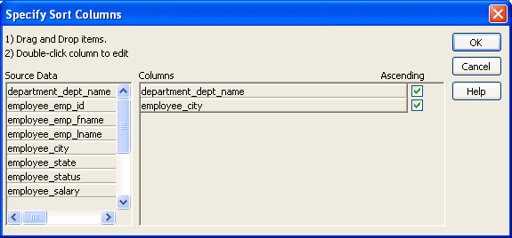

To sort the rows within levels in a TreeView DataWindow:
To sort the rows within levels in a TreeView DataWindow:
Select Rows>Sort from the menu bar.
Drag the columns that you want to sort the rows on from the Source Data box to the Columns box.
The order of the columns determines the precedence of the sort. The sort order is ascending by default. To sort in descending order, clear the Ascending check box.
For example, the sample DataWindow shown in "Example" has department name as the first level and the employee's city of residence as the second level.

To reorder the columns, drag them up or down in the list. To delete a column from the sort columns list, drag the column outside the dialog box. To specify an expression to sort on, double-click a column name in the Columns box and modify the expression in the Modify Expression dialog box.